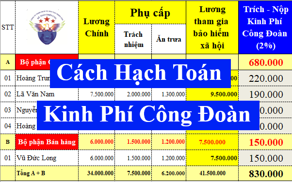
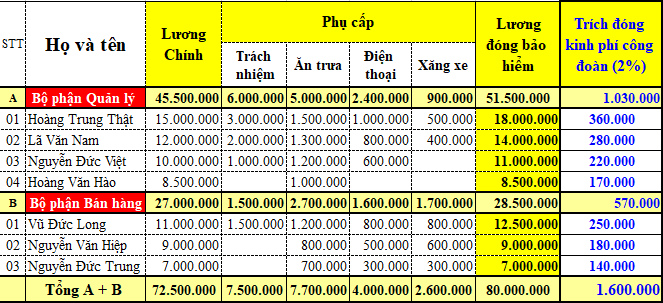

Hướng dẫn cách hạch toán trích nộp kinh phí công đoàn theo Thông tư 99/2025/TT-BTC và Thông tư 133/2016/TT-BTC
1. Hạch toán kinh phí công đoàn theo Thông tư 99/2025/TT-BTC (áp dụng từ năm tài chính 2026 trở đi, thay thế cho Thông tư 200/2014/TT-BTC)
+ Tài khoản sử dụng: Tài khoản 3382 - Kinh phí công đoàn: Phản ánh tình hình trích và thanh toán kinh phí công đoàn ở đơn vị.
+ Kết cấu:
| Bên Nợ | Bên Có |
|
- Kinh phí công đoàn chi tại đơn vị;
- Số KPCĐ đã nộp cho Liên đoàn lao động;
|
- Trích KPCĐ vào chi phí sản xuất, kinh doanh
- Kinh phí công đoàn vượt chi được cấp bù;
|
|
Tài khoản này có thể có số dư bên Nợ: Số dư bên Nợ phản ánh số KPCĐ đã nộp nhiều hơn số phải nộp + và kinh phí công đoàn vượt chi chưa được cấp bù. |
Số dư bên Có: KPCĐ đã trích chưa nộp cho cơ quan quản lý hoặc kinh phí công đoàn được để lại cho đơn vị chưa chi hết; |
+ Cách hạch toán kinh phí công đoàn theo Thông tư 99/2025/TT-BTC như sau:
Nghiệp vụ 1: Khi trích KPCĐ, ghi:
Nợ các TK 622, 627, 641, 642,... (số tính vào chi phí SXKD)
Có TK 3382 - Kinh phí công đoàn
Lưu ý:
+ Theo nguyên tắc kế toán của Tài khoản 623 - Chi phí sử dụng máy thi công tại Thông tư 99/2025/TT-BTC thì:
c) Không hạch toán vào Tài khoản 623 - Chi phí sử dụng máy thi công khoản trích về bảo hiểm xã hội, bảo hiểm y tế, kinh phí công đoàn, bảo hiểm thất nghiệp tính trên lương phải trả công nhân sử dụng xe, máy thi công. Phần chi phí sử dụng máy thi công vượt trên mức bình thường không tính vào giá thành công trình xây lắp mà được kết chuyển ngay vào Tài khoản 632 - Giá vốn hàng bán.
+ NLĐ làm việc ở bộ phận nào thì khi trích KPCĐ theo lương đóng BH của NLĐ đó sẽ tính vào chi phí của bộ phận đó
Để hiểu rõ hơn về cách trích kinh phí công đoàn thì Kế Toán Diệu Tâm mời các bạn tham khảo bài viết sau:
Nghiệp vụ 2: Khi nộp KPCĐ về liên đoàn lao động, ghi:
Nợ TK 3382 - Kinh phí công đoàn
Có TK 112 (nếu nộp bằng tiền mặt thì ghi có TK 111)
Nghiệp vụ 3: Chi tiêu kinh phí công đoàn tại đơn vị, ghi:
Nợ TK 3382 - Kinh phí công đoàn
Có TK 111 hoặc Có TK 112
Nghiệp vụ 4: Kinh phí công đoàn chi vượt được cấp bù, khi nhận được tiền, ghi:
Nợ các TK 111, 112
Có TK 3382 - Kinh phí công đoàn
2. Hạch toán kinh phí công đoàn theo Thông tư 133:
Theo Thông tư 133/2016/TT-BTC về chế độ kế toán doanh nghiệp nhỏ và vừa thì:
Điều 45. Tài khoản 338 - Phải trả, phải nộp khác

Tài khoản 338 - Phải trả, phải nộp khác, có 8 tài khoản cấp 2, trong đó:
Tài khoản 3382 - Kinh phí công đoàn: Phản ánh tình hình trích và thanh toán kinh phí công đoàn ở đơn vị.
Tài khoản 3382 - Kinh phí công đoàn: Phản ánh tình hình trích và thanh toán kinh phí công đoàn ở đơn vị.
=> Vậy là: Đối với những doanh nghiệp áp dụng chế độ kế toán theo Thông tư 133 thì Khi trích và nộp kinh phí công đoàn thì doanh nghiệp cũng sẽ hạch toán KPCĐ vào tài khoản 3382 tương tự như Thông tư 99/2025/TT-BTC nêu trên
4. Bài tập Hướng dẫn cách hạch toán trích nộp kinh phí công đoàn:
Tại tháng 5/2025, Công ty Kế Toán Diệu Tâm có số liệu trích nộp kinh phí công đoàn như sau:

Theo quy định tại điều 4 của Nghị định 191/2013/NĐ-CP về đối tượng đóng kinh phí công đoàn thì:
Toàn bộ 2% trích đóng kinh phí công đoàn này đều là do doanh nghiệp đóng
(Người lao động không bị trích KPCĐ trừ vào lương)
Căn cứ vào bảng trích kinh phí công đoàn theo lương đóng BHXH của NLĐ thì Công ty Kế Toán Diệu Tâm sẽ hạch toán như sau:
1. Hạch toán trích kinh phí công đoàn vào chi phí của từng bộ phận trong doanh nghiệp:
Căn cứ vào bảng lương hoặc bảng trích kinh phí công đoàn, hạch toán:
Nợ TK 641: 570.000 (Thông tư 133 dùng TK 6421)
Nợ TK 642: 1.030.00 (Thông tư 133 dùng TK 6422)
Nợ TK 642: 1.030.00 (Thông tư 133 dùng TK 6422)
Có TK 3382: 1.600.000
Công ty đào tạo Kế Toán Diệu Tâm mời các bạn tham khảo thêm:
2. Hạch toán nộp tiền kinh phí công đoàn về Liên đoàn lao động (Đã nộp bằng tiền gửi ngân hàng)
Căn cứ vào chứng từ nộp tiền (giấy/phiếu báo nợ của ngân hàng), hạch toán:
Nợ TK 3382: 1.600.000
Có TK 112: 1.600.000
(Nếu nộp bằng tiền mặt thì sẽ căn cứ vào phiếu chi để hạch toán)
============================
Công ty đào tạo Kế Toán Diệu Tâm chia sẻ thêm thông tin:
Theo quy định tại khoản 3, điều 7 của Nghị định 191/2013/NĐ-CP để hướng dẫn về việc trích nộp kinh phí công đoàn và các nội dung khác về tài chính công đoàn thì:
Điều 7. Nguồn đóng kinh phí công đoàn
3. Đối với doanh nghiệp và đơn vị có hoạt động sản xuất kinh doanh, dịch vụ, khoản đóng kinh phí công đoàn được hạch toán vào chi phí sản xuất, kinh doanh, dịch vụ trong kỳ.
Hàng tháng, doanh nghiệp sẽ phải trích đóng kinh phí công đoàn (doanh nghiệp đóng kinh phí công đoàn mỗi tháng một lần cùng thời điểm đóng bảo hiểm xã hội bắt buộc cho người lao động)
Chi tiết về mức đóng thì các bạn xem tại đây: Mức đóng kinh phí công đoàn theo tỷ lệ trích nộp 2026 mới nhất
Lưu ý: Dù doanh nghiệp có tổ chức công đoàn hay chưa có tổ chức công đoàn cũng đều phải đóng kinh phí công đoàn
|
Trước ngày 01/01/2026 thì những doanh nghiệp áp dụng chế độ kế toán theo Thông tư 200/2014/TT-BTC thì cách hạch toán kinh phí công đoàn như sau Theo Thông tư 200/2014/TT-BTC hướng dẫn Chế độ kế toán Doanh nghiệp thì:
Điều 57. Tài khoản 338 – Phải trả, phải nộp khác
Tài khoản 338 - Phải trả, phải nộp khác, có 8 tài khoản cấp 2, trong đó:
Tài khoản 3382 - Kinh phí công đoàn: Phản ánh tình hình trích và thanh toán kinh phí công đoàn ở đơn vị.
=> Vậy là: Đối với những doanh nghiệp áp dụng chế độ kế toán theo Thông tư 200 thì Khi trích và nộp kinh phí công đoàn thì doanh nghiệp sẽ hạch toán vào tài khoản 3382
3. Kết cấu của Tài khoản 3382 - Kinh phí công đoàn như sau:
Điều 57. Tài khoản 338 – Phải trả, phải nộp khác
3. Phương pháp kế toán một số giao dịch kinh tế chủ yếu
3.3 Kế toán KPCĐ
- Khi trích KPCĐ, ghi:
Nợ các TK 622, 627, 641, 642 (số tính vào chi phí SXKD)
Có TK 3382 - Kinh phí công đoàn
- Khi nộp KPCĐ, ghi:
Nợ TK 3382 - Kinh phí công đoàn
Có các TK 111, 112,...
- Kinh phí công đoàn chi vượt được cấp bù, khi nhận được tiền, ghi:
Nợ các TK 111, 112
Có TK 3382 - Kinh phí công đoàn
|